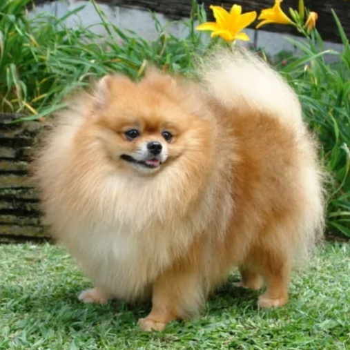

포메라니안 Pomeranian
사모예드와 스피츠를 소형화 시킨 독일 폼메른 출신의 소형견 포메라니안은 포메른의 라틴어/영어식 표현인 포메라니아의 영어 형용사형에서 포메라니안이라는 명칭이 비롯되었습니다. 유럽 대륙에서는 주로 'Zwergspitz (난쟁이 스피츠)'라 부르고 있습니다. 애견협회의 혈통서를 보면 토이 스피츠(Toy Spitz)가 정식 품종명입니다.
사모예드와 스피츠를 소형화 시킨 독일 폼메른 출신의 소형견 포메라니안은 포메른의 라틴어/영어식 표현인 포메라니아의 영어 형용사형에서 포메라니안이라는 명칭이 비롯되었습니다. 유럽 대륙에서는 주로 'Zwergspitz (난쟁이 스피츠)'라 부르고 있습니다. 애견협회의 혈통서를 보면 토이 스피츠(Toy Spitz)가 정식 품종명입니다.
키는 22~ 28cm, 몸무게는 1.8 ~ 2.7kg 사이입니다.
포메라니안은 직모 이중모를 갖고있고 모량이 풍부한 편이며 직모이기에 다른 장모종과 달리 털이 몸에 붙지 않아 솜사탕같은 모습을 띕니다.
포메라니안은 우리의 생각보다 다양한 색을 가지고 있습니다. 18세기 이전에는 무채색 계열이 인기가 많았으나, 영국 빅토리아 여왕의 애완견이 붉은 계열의 포메라니안을 키우면서 현재 우리가 아는 오렌지빛이 도는 색이 되었습니다.
현재는 흰색, 검정, 갈색, 빨강, 오렌지, 크림, 파란색, 블랙앤탠, 브라운앤탠, 점무늬, 얼룩무늬 등이 있으며 가장 흔한 색 종류는 오렌지, 검정, 크림, 흰색입니다.
스피츠 계열의 특유의 강한 야생성과 공격적 본능이 고스란히 남아있는 채 소형견으로 종이 개발이 되다 보니 강한 경계심을 띄고 있습니다.
주인과 정서적 유대감이 매우 낮아서 먹을 것을 흔들 때를 제외하면 주인과 상호 작용을 거의 하려 하지 않습니다. 스피츠 계열은 야생성이 강하게 남아 있기 때문에 인간과의 상호작용에 익숙치 않으며, 주인을 자신과 동등한 존재로 보는 경향이 있습니다.
강한 경계성을 갖고있고 폐쇄적 사회성을 가지고 있는 경우가 많기에 다른 강아지나 심지어 사람을 만날 때도 항상 긴장의 끈을 놓아서는 안됩니다.
포메라니안은 사모예드에서 유래되었기에 더위와 습기에 매우 약한 동물입니다. 집에서 키우려면 항상 시원하게 해줘야 하며 습기도 피해야 합니다. 특히 잠을 자는 켄넬 혹은 개집은 시원한 곳에 마련해 두어야 하는데, 여름에는 무조건 에어컨을 거의 24시간 풀로 가동해 주어야 합니다.
손질이 어려운 편은 아니지만, 털갈이와 털이 엉키지 않도록 매일 빗질을 해주어야 합니다. 빗질을 하기 어려운 상황이라 털을 밀게 된다면, 털이 자라지 않을 수 있을 뿐만 아니라 우울해 하고 자신감을 상실하여 구석진 곳에 들어가 나오지 않으려 할 수 있으니 관리를 해주는 것이 좋습니다.
슬개골이 좋지 않습니다. 게다가 활동성이 높고 다혈질적인 성격 때문에 두 발로 서있거나, 격하게 뛰는 일이 많아 자칫하면 수술을 하게 될 수 있습니다. 그렇기에 움직임을 자제시키는 것이 좋습니다.
개가 정상적으로 생존할 수 있을 정도의 뼈와 관절, 구강의 내구성을 갖추지 못한 채 축소되어 뼈가 무척 약합니다. 실제로 포메라니안은 소파 정도 높이에서 뛰어 내려도 쉽게 골절이 되며, 아직 팔팔한 나이인데도 이빨이 흔들리다 빠지는 경우도 부지기수입니다.